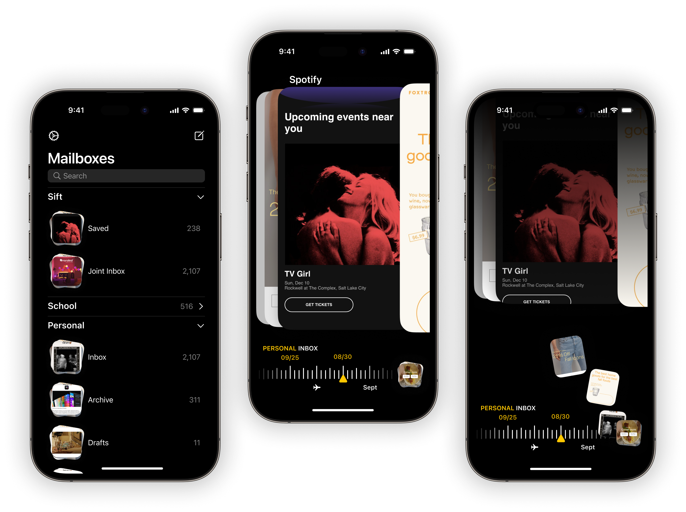
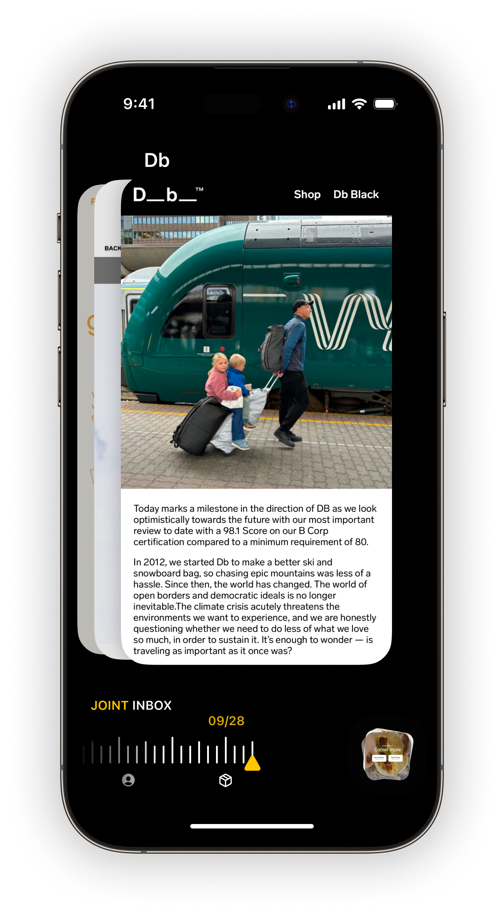
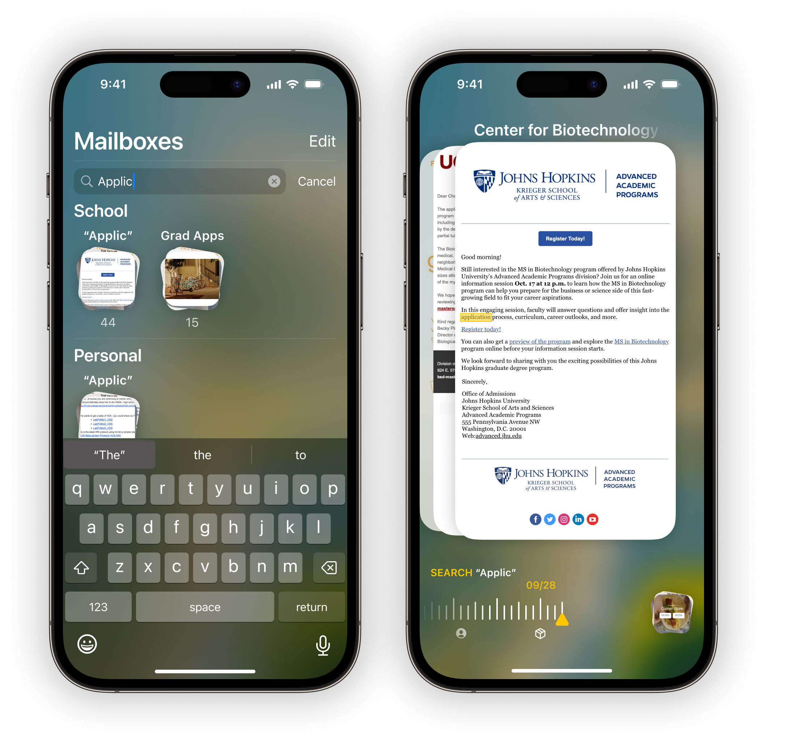

Home
Home
 Work
Work
 About
About
 Audio
Audio
Sift Mail
Don't fight the junk.
Just sift.

Just sift.
Touch what's important.
Sift let's you sort mail just like at home. By scanning mail previews, go through a hundred emails in just minutes. Pull out what looks important - and toss what's not.
Concept
Research
Introduction
We've lost the war. The majority of our inboxes are flooded with clutter. And many of us have just given up.
But when we ignore our email, we lose out on opportunities and information we might have otherwise acted on.
But when we ignore our email, we lose out on opportunities and information we might have otherwise acted on.
In a Nutshell
Sift let's your eyes select mail by color and form - just like at home.
It makes going through your mail a blazing fast experience - inspired by the way we sort at home.
It makes going through your mail a blazing fast experience - inspired by the way we sort at home.
13,000 Unread Emails
This case is a heuristic exploration of mail sorting and ignoring.
At home, we can sort through several letters, bills, magezines, and 'special offers,' in minutes.
But many of our digital mailboxes are often neglected, bursting at the seams. Mail has been digital for decades - why does managing it remain a chore?
At home, we can sort through several letters, bills, magezines, and 'special offers,' in minutes.
But many of our digital mailboxes are often neglected, bursting at the seams. Mail has been digital for decades - why does managing it remain a chore?
Observational Research
Studying how people handle physical mail revealed a disparity between the physical and digital mail sorting experience.
No one sorts mail piece-by-piece - we make split-second grouping decisions.
Bills in one pile, magazines in another, junk mail straight to the trash. We parse things collectively based on glance impressions. It's fluid, tactile, efficient.
No one sorts mail piece-by-piece - we make split-second grouping decisions.
Bills in one pile, magazines in another, junk mail straight to the trash. We parse things collectively based on glance impressions. It's fluid, tactile, efficient.
Affording Vision
Physical junk mail has such a predictable look and that look continues to be distinguishable even in the digital world.
Font, color, formatting - our eyes recognize and sort visual patterns quickly into groups. Yet virtual tools ignore these advantages.
Any interface that builds off existing physical sorting habits needs to show more than just sender and subject lines to our eyes.
Font, color, formatting - our eyes recognize and sort visual patterns quickly into groups. Yet virtual tools ignore these advantages.
Any interface that builds off existing physical sorting habits needs to show more than just sender and subject lines to our eyes.
Sift
Stacks
Multiple inboxes in a stack.

Swipe
Swipe up to trash, down to save.

Mailboxes
Everything is a stack.
Viewing
Emails in a fuller screen.
Wallpaper
Stealth black or add a wallpaper.
Search
Find things fast.

Across the Ecosystem
MacOS
12 emails at a time.

MacOS
Click to keep.

MacOS
Tap and hold to enter view mode.

iPadOS
Just like Mac.
iPadOS
Just like Mac.
Lessons Learned
Title
Topic
Main Point
Main Point
Title
Topic
Main Point
Main Point